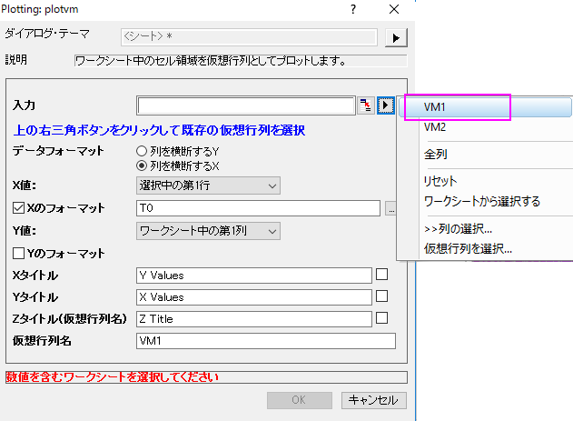

FAQ-833 仮想行列をプロットするには？
how-to-customize-data-when-plotting-virtual-matrix
最終更新日: 2019/2/18
仮想行列としたワークシートのセル範囲から、等高線や3Dグラフを作成できます。
仮想行列からグラフを作成する際には、以下の2つのオプションがあります。
1.仮想行列を作成します。
この場合、仮想行列を作成すると同時に作図します。
- ワークシートセルブロックを選択して、作図メニューから、作図: 3D：3Dカラーマップ曲面、または、仮想行列からのグラフ作成をサポートしているグラフタイプを選択して、Plotting: plotvm ダイアログを開きます。
- XとYの値を設定する方法をデータフォーマット項目から作成します。
| 列を横断するYを選択した場合、行の値がY値、列の値がX値になります。また、列を横断するXを選択した場合、行の値がX値、列の値がY値になります。
|
- XとYデータの範囲をY値とX値ドロップダウンリストから選択します。
| 仮想行列を作成する際に、ドロップダウンリストでなしが選択されると、行インデックス/列インデックスはX/Yデータになります。
|
- OKボタンをクリックして、仮想行列を作成します。
2.既存の仮想行列を選択
この場合、既存の仮想行列を使って作図します。
- 作図メニューからPlotting: plotvm ダイアログを開きます。
- 入力項目の三角形ボタンをクリックして、フライアウトメニューから既存の仮想行列を選択します。
- 
 | 仮想行列マネジャーを使って、既存仮想行列を変更できます。仮想行列マネジャーダイアログを起動するには、ツール: 仮想行列マネジャー…をメニューから選択するか、 仮想行列で作成したグラフの上でダブルクリックして、作図の詳細ダイアログを開き、下にあるワークブックボタンをクリックします。
仮想行列マネジャーダイアログでは、
- 左のパネルにある仮想行列を右クリックして削除を選択し、既存の仮想行列を削除できます。
- ダイアログで仮想行列の名前、データタイトル、データフォーマットを変更できます。
- ワークシートに行く ボタン
 をクリックして、仮想行列を作成するワークシートに移動できます。 をクリックして、仮想行列を作成するワークシートに移動できます。
- 右のパネルでグラフを選択して、現在の仮想行列で作図しているグラフに行き、グラフに行くボタンをクリックします。

|
| 仮想行列からグラフを作成した後は、作図の詳細ダイアログで簡単に仮想行列の範囲を指定できます。
- プロット上でダブルクリックして、作図の詳細ダイアログを開きます。
- 左のパネルに行きグラフの名前の上にカーソルを置きます。
- ツールチップが表示され、仮想行列の範囲を聞かれます。
|
キーワード仮想行列、3Dグラフ
必要なOriginのバージョン: Origin 2015 以降